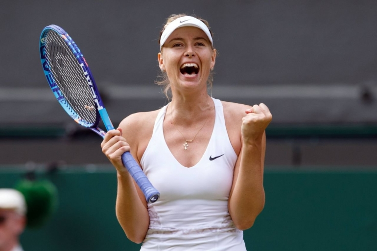

Орусиялык теннисчи Мария Шарапова кыз-келиндер тенниси ассоциациясынын рейтингинде эң мыкты 50 теннисчинин катарын толуктады. Бул тууралуу бүгүн, 8-январда чет элдик басылмалар жазып чыгышты.
Маалыматта жазылгандай, Шарапова мурунку ээлеп турган ордунан 12 сап алдыга жылып, 47-орунду ээлеген. Орусиялык теннисчи айымдардын арасынан эң мыкты көрсөткүчтү Светлана Кузнецова көрсөткөн. Ал азыр 14-орунда жайгашкан.
Мындан тышкары эң мыкты 50 теннисчинин катарына 4 орусиялык теннисчи кирген. Алар: Анастасия Павлюченкова 16-орун, Елена Веснина 17-орун, Дарья Касаткина 24-орун жана Екатерина Макарова 33-орун.
Ал эми рейтингдин сап башында румыниялык Симона Халеп жайгашкан. Ал эми экинчи орунду даниялык Каролинsа Возняцки ээлесе, үчүнчү сапта испаниялык Гарбинье Мугуруса жазылган.
Айта кетсек, Мария Шарапова мельдоний затын колдонгону үчүн 15 айга ар кандай оюндарга катышуу укугунан ажырап, оюндардан четтетилген. Ал 2017-жылдын апрель айында спорт дүйнөсүнө кайтып келген.
22:30 08-01-2018
Автор: Айзада Тураркулова